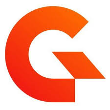
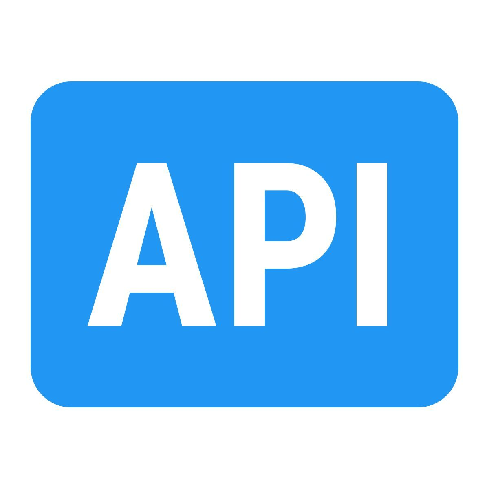
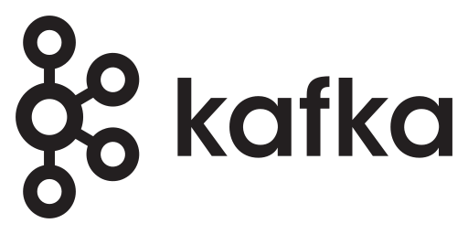
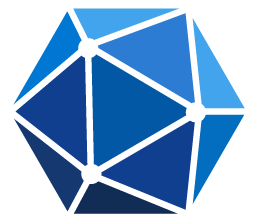

Architecture.
Built with Office.js, the add-in renders a task pane inside Outlook. When a user selects an email and clicks submit, the add-in reads the email metadata and passes it to the API gateway. Authentication is handled via OAuth2 with Microsoft identity platform.

All traffic flows through Gravitee as the API gateway. It handles routing, rate limiting and security policies. The gateway forwards validated requests to the Ingest API running behind it.

The core backend service. It receives the submission from the gateway, fetches the full email and attachments via the Microsoft Graph API using an OBO (On-Behalf-Of) OAuth2 flow, then publishes a structured event to a Kafka topic. Custom handling includes deduplication logic and retry mechanisms.

Events are published to a Kafka topic for async downstream processing. A Kafka consumer service processes each event, with deduplication to prevent duplicate submissions and full audit logging for traceability.

A full CI/CD pipeline was set up for GitHub Actions , including build, test and deployment stages. The pipeline is ready to deploy the full system when the organisation decides to move from proof of concept to production.

Tracks every submission , who submitted what email, when, and with what processing status. The Outlook Add-in reads this database to show the user their submission history directly inside the task pane.
The Ingest API saves the full email body and all attachments to document storage after fetching them from Microsoft Graph. The storage returns document IDs which are then included in the Kafka event for downstream reference.

External Microsoft API used by the Ingest API to retrieve the full email content and attachments. Access is granted via an OBO (On-Behalf-Of) OAuth2 flow , the user's token is exchanged so the backend can fetch emails on their behalf without storing credentials.